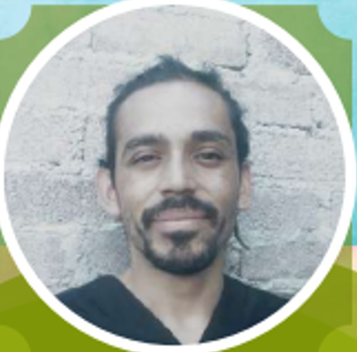

Jaid Lozano Fisioterapeuta
Terapias a domicilio con enfoque humano y profesional
Egresado del Instituto Tzapin de Medicinas Complementarias

Contacto: 55 9146 1227
Terapias a domicilio en zona El Salado, Los Reyes, La Perla, Pueblos de Ejidos SanAgustin y SanSebastian
Egresado del Instituto Tzapin de Medicinas Complementarias
Masaje Tradicional
5 Beneficios del Masaje
- Reduce el estrés y la ansiedad
- Alivia tensiones musculares
- Mejora la circulación sanguínea
- Aumenta la flexibilidad
- Promueve el sueño reparador
Tratamiento para:
- Estrés crónico
- Dolor lumbar
- Tortícolis
- Contracturas musculares
- Fatiga general
- Insomnio
- Cefaleas tensionales
- Mala circulación
- Estrés postraumático
- Rigidez articular

Masaje con Ventosas
5 Beneficios de Ventosas
- Desintoxica el organismo
- Alivia dolores profundos
- Mejora la circulación linfática
- Reduce la celulitis
- Relaja la fascia muscular
Tratamiento para:
- Dolor crónico de espalda
- Fibromialgia
- Problemas respiratorios
- Artritis
- Mala digestión
- Estrés profundo
- Lesiones deportivas
- Celulitis
- Problemas de circulación
- Fatiga muscular

Acupuntura
5 Beneficios de Acupuntura
- Equilibra la energía vital
- Alivia el dolor sin fármacos
- Fortalece el sistema inmune
- Regula las emociones
- Mejora la digestión
Tratamiento para:
- Ansiedad
- Depresión leve
- Alergias
- Migrañas
- Problemas digestivos
- Insomnio
- Estrés
- Dolor crónico
- Adicciones
- Problemas de fertilidad

Auriculoterapia
5 Beneficios de Auriculoterapia
- Tratamiento no invasivo
- Efectos rápidos
- Equilibra el sistema nervioso
- Ayuda a controlar adicciones
- Reduce la ansiedad
Tratamiento para:
- Estrés
- Insomnio
- Adicciones (tabaco, comida)
- Dolor de cabeza
- Problemas digestivos
- Alergias
- Ansiedad
- Problemas hormonales
- Fatiga
- Control de peso

Paquetes Terapéuticos En apoyo a tu economía
Relajación
Masaje terapéutico
$350 MXN
Desintoxicación
Ventosas
$250 MXN
Equilibrio
Acupuntura
$250 MXN
Armonía
Auriculoterapia
$150 MXN
✨ En apoyo a tu economía y apoyo a la comunidad ✨